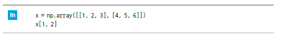
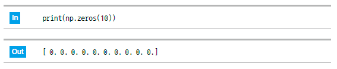

1. 이번 단원에서 배우는 것
CSV는 Comma-Separated Values의 약자로, 쉼표로 값을 구분해 저장하는 텍스트 기반 데이터 파일입니다. 엑셀처럼 표 형태로 보이지만 실제 내부는 줄과 쉼표로 구성됩니다.
CSV 구조행, 열, 헤더의 개념을 이해합니다.
csv 모듈파이썬 기본 기능으로 CSV를 읽고 씁니다.
pandasDataFrame으로 CSV를 편하게 다룹니다.
저장처리 결과를 새 CSV로 저장합니다.
2. CSV 파일 구조
CSV 파일의 첫 줄은 보통 컬럼 이름, 즉 헤더입니다. 그 아래 줄부터 실제 데이터가 들어갑니다.
name,age,score
민수,20,85
지연,21,90
현우,19,78
| 구성 | 의미 |
|---|---|
| 행 | 한 사람, 한 상품, 한 날짜처럼 하나의 데이터 단위입니다. |
| 열 | 이름, 나이, 점수처럼 데이터의 속성입니다. |
| 헤더 | 각 열의 이름입니다. |
3. csv 모듈로 읽기
파이썬 기본 라이브러리인 csv 모듈을 사용하면 별도 설치 없이 CSV 파일을 읽을 수 있습니다.

import csv
with open("students.csv", "r", encoding="utf-8") as file:
reader = csv.reader(file)
for row in reader:
print(row)
4. csv 모듈로 쓰기
csv.writer()를 사용하면 리스트 형태의 데이터를 CSV 파일로 저장할 수 있습니다.
import csv
data = [
["name", "age", "score"],
["민수", 20, 85],
["지연", 21, 90],
["현우", 19, 78]
]
with open("students.csv", "w", encoding="utf-8", newline="") as file:
writer = csv.writer(file)
writer.writerows(data)
Windows 주의: CSV 저장 시 빈 줄이 추가되면
newline="" 옵션을 확인하세요.5. pandas로 CSV 읽기
데이터 분석에서는 CSV 파일을 pandas의 read_csv()로 읽는 경우가 많습니다. 읽은 데이터는 DataFrame이라는 표 형태 자료구조가 됩니다.

import pandas as pd
df = pd.read_csv("students.csv")
print(df)
print(df.head())
6. pandas로 CSV 저장하기
DataFrame을 수정한 뒤 to_csv()를 사용하면 새 CSV 파일로 저장할 수 있습니다.
import pandas as pd
df = pd.read_csv("students.csv")
df["pass"] = df["score"] >= 80
df.to_csv("students_result.csv", index=False, encoding="utf-8-sig")
한글 파일 팁: 엑셀에서 한글이 깨지면
encoding="utf-8-sig"를 사용해 저장해 보세요.7. 실습 체크리스트
- CSV의 행, 열, 헤더를 설명할 수 있다.
csv.reader()로 CSV를 읽을 수 있다.csv.writer()로 CSV를 저장할 수 있다.pd.read_csv()로 CSV를 DataFrame으로 읽을 수 있다.to_csv()로 처리 결과를 저장할 수 있다.
8. 종합 실습 문제
1. 문제 출제
학생 점수 CSV 파일을 읽고, 합격 여부 컬럼을 추가한 뒤 새 파일로 저장하는 프로그램을 작성해 보세요.
- 파일명은
students.csv라고 가정합니다. - 컬럼은
name,age,score입니다. - 점수가 80점 이상이면 합격 여부를
True로 표시합니다. - 결과를
students_result.csv로 저장합니다.
2. 문제 해결에 필요한 개념 요약
| 개념 | 활용 방법 |
|---|---|
| CSV | 표 형태 데이터를 파일로 저장합니다. |
| DataFrame | CSV를 표 형태로 읽어 처리합니다. |
| 조건식 | 점수가 80점 이상인지 판단합니다. |
| 저장 | 처리 결과를 새 CSV 파일로 저장합니다. |
3. 수도코드
pandas를 불러온다.
students.csv 파일을 읽는다.
score 컬럼이 80 이상인지 조건을 만든다.
조건 결과를 pass 컬럼에 저장한다.
결과 DataFrame을 화면에 출력한다.
students_result.csv 파일로 저장한다.
4. 실행 예시
입력 CSV 예시는 다음과 같습니다.
name,age,score
민수,20,85
지연,21,90
현우,19,78
예상 출력값은 다음과 같습니다.
name age score pass
0 민수 20 85 True
1 지연 21 90 True
2 현우 19 78 False